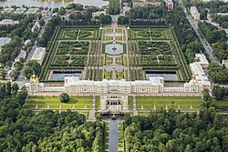
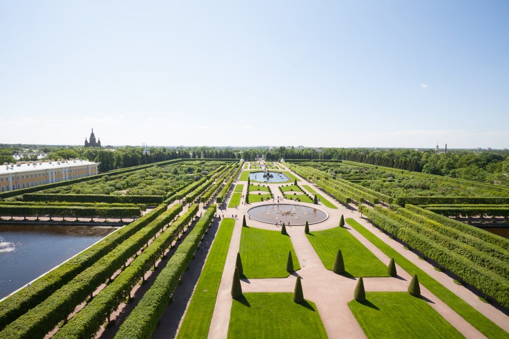
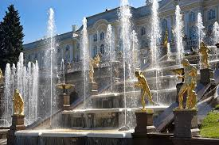
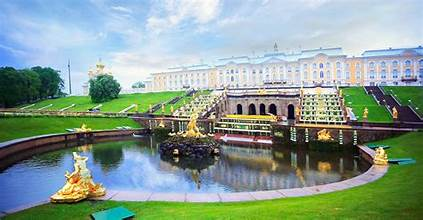
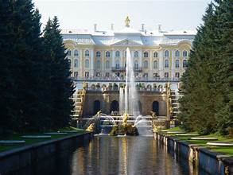

Peterhof Palace is a grand imperial residence located on the southern shore of the Gulf of Finland, about 30 kilometers from Saint Petersburg. Often called the "Russian Versailles," it was commissioned by Peter the Great in the early 18th century and later expanded by his successors. The estate is famed for its opulent architecture and elaborate fountain system, symbolizing the power and sophistication of imperial Russia.
Construction of Peterhof Palace began in 1714 as Peter the Great sought a seaside retreat to rival the grandeur of France’s Versailles. The complex grew over time under architects such as Bartolomeo Rastrelli and Jean-Baptiste Le Blond, eventually encompassing a series of palaces, pavilions, and landscaped gardens. The ensemble reflects Russia’s rise as a European power and Peter’s vision of a modern, Western-influenced empire.
The Grand Palace, rebuilt and embellished during the reign of Elizabeth of Russia, showcases Baroque splendor with richly decorated halls and gilded details. The park’s hallmark is the Grand Cascade—a monumental fountain system adorned with sculptures and water jets powered by gravity without pumps. The Lower Park’s intricate layout of fountains, grottoes, and alleys creates a theatrical landscape experience.
During World War II, Peterhof suffered extensive destruction under German occupation. Postwar restoration, which continues to this day, meticulously reconstructed interiors, artwork, and hydraulic systems. The site reopened to the public as a museum complex, showcasing both the grandeur of imperial Russia and the achievements of preservation.
Today, Peterhof Palace is one of Russia’s most visited tourist attractions and a national museum reserve. Its gardens and fountains operate seasonally, drawing millions of visitors each year to witness the spectacle of water, architecture, and history in harmony.


